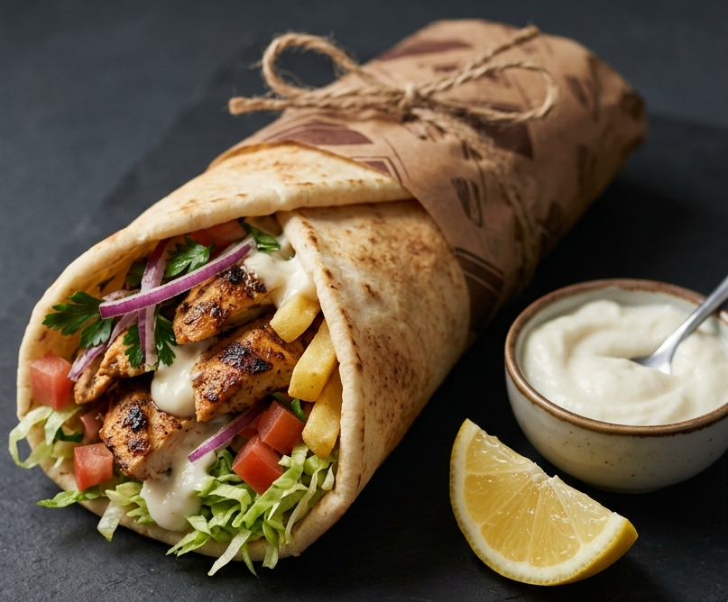

Home
Chicken Shawarma Wrap

Description:
A Chicken Shawarma Wrap is a Middle Eastern sandwich made with thinly sliced, marinated chicken that's slow-roasted on a vertical spit or grilled until tender and slightly charred. The chicken is wrapped in a warm pita or flatbread along with creamy garlic paste (toum), crunchy pickles, fresh lettuce, and often crispy fries. It's tangy, savory, juicy, and mildly spiced — a perfect handheld meal.
Ingredients:
- Chicken (thighs or breast) - 500g
- Yogurt - 1/2 cup
- Garlic paste - 1 tbsp
- Vinegar - 1 tbsp
- Cumin powder - 1 tsp
- Paprika - 1 tsp
- Cinnamon powder - 1/2 tsp
- Salt - to taste
- Oil - 1 tbsp
- Pita bread or flatbread
- Garlic pasta or garlic mayo
- Lettuce (shredded)
- Pickles (sliced)
- Fries (optional)
Steps:
- Mix yogurt, garlic paste, vinegar, cumin, paprika, cinnamon, salt, and oil in a bowl. Add chicken and coat well. Refrigerate for 1-8 hours.
- Pan-sear, grill, or bake the chicken until fully cooked and slightly charred. Let it rest for 5 minutes, then slice into thin strips.
- Heat the pita or flatbread on a pan for 30 seconds per side.
- Spread garlic paste on the bread. Add lettuce, pickles, and fries (if using). Place the sliced chicken on top.
- Fold the sides in, roll tightly, and toast on a hot pan for 1-2 minutes per side until golden and crispy.
- Cut in half and serve warm with extra garlic sauce or chili sauce.